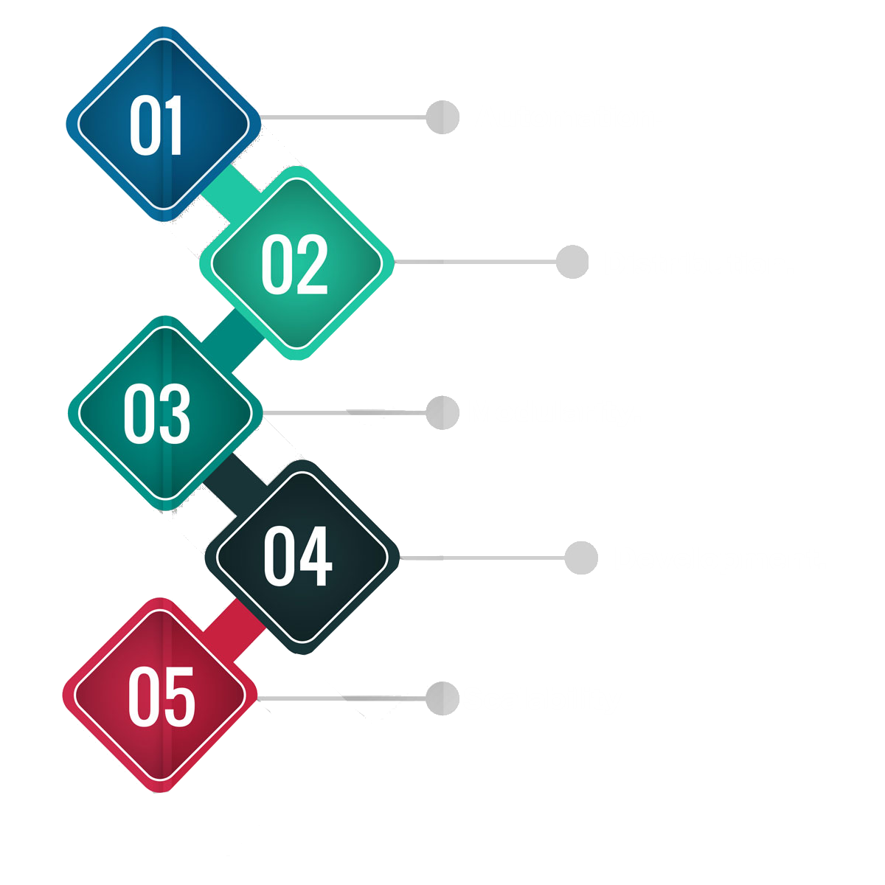

Open Finance
Open Finance
Our Documentation.


Our Proving System.
In order to comply with regulatory guidelines and maintain investor privacy, all sensitive data must be stored on our secure private server. Yet without an additional mechanism, users have no guarantee that we are preserving the integrity of this data. Our first product in a series of innovations to resolve the tension between privacy and transparency is a system to establish data checkpoints. Periodically, we will make a fingerprint of our data and publish it for anyone to see and save. It is not possible to recover any of the sensitive data from this fingerprint, but it is possible in the event of an audit to recompute the fingerprint for comparison with a published one.
Our Differentiator.
We’re founded by industry veterans.
Our team of exchange technologists, securities lawyers, and trading veterans brings liquidity to investors currently locked into these historically illiquid assets.

Our Use Cases
Our Roadmap.

Our Team.

Juan M. Hernadez
Founder, Lead Architect
Kellogg School of Business

Jordan Fishfeld
Founder, Head of Sales
U Miami JD/MBA

Dan Breen
Head of Operations
25+ Years Trading

Kael Shipman
Lead Developer
12+ years experience

Thomas McInerney
Head of Blockchain Development
Northwestern University

Ian Shipman
Mathematician
PhD, University of Chicago

Andrew Steinwold
Head of Partnerships
Crypto Investor Since 2013

Ray Coti
Full Stack Developer
Connecticut College
Our Investors.


Ready for the future of finance? Join our slack for updates.
Stay connected with latest updates.
Other ways to connect.